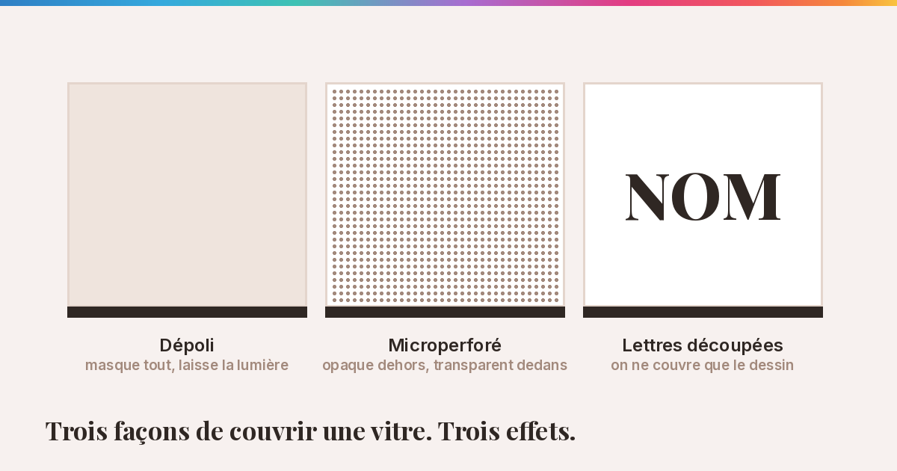
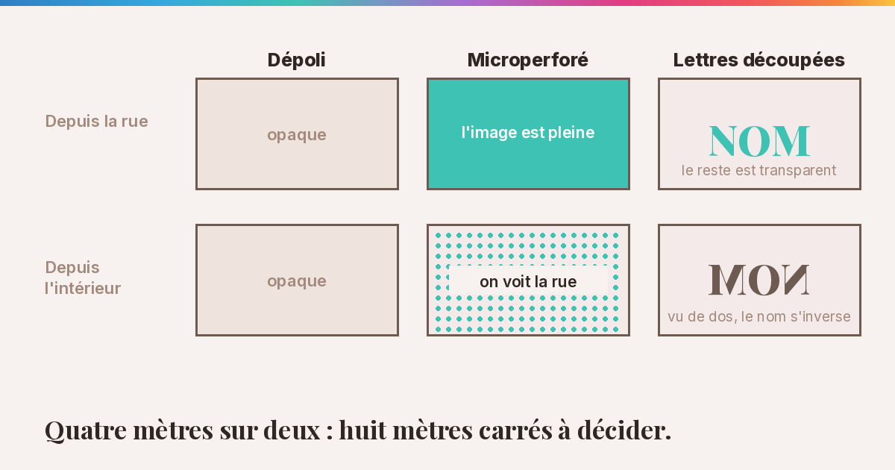
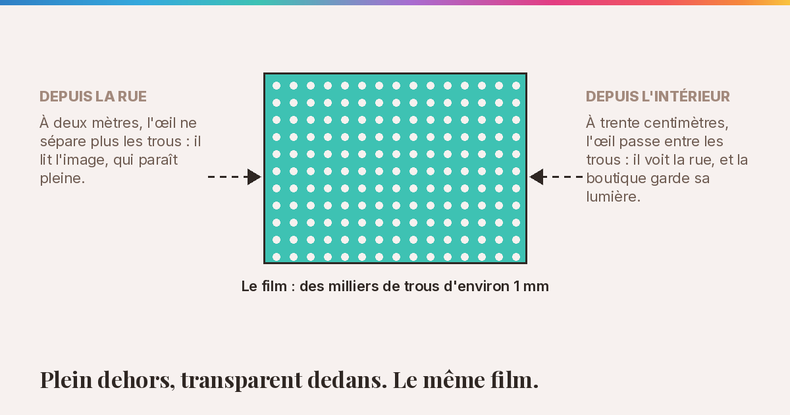

Habiller sa vitrine : dépoli, microperforé ou lettres découpées ?

Un commerçant m'appelle en octobre. Il vient de reprendre un local en centre-ville, la vitrine fait quatre mètres, et depuis la rue on voit surtout des cartons et le dos d'un présentoir. Il voudrait « mettre un adhésif ». Très bien — mais il y en a trois familles, elles ne font pas la même chose, et le choix se décide avant de parler de visuel.
Commençons par le chiffre qui rend la question sérieuse : quatre mètres sur deux, c'est huit mètres carrés de surface visible à hauteur d'œil, vus par tous les gens qui passent dans votre rue. C'est le plus grand support que vous possédez, et vous ne le louez à personne.
Le dépoli : masquer sans assombrir
L'adhésif dépoli, parfois appelé « sablé » ou « givré », imite le verre dépoli. C'est un film translucide, légèrement granuleux, qui laisse passer la lumière mais pas le regard.
Son usage principal n'est pas décoratif, il est pratique : masquer le bas de la vitrine. Les réserves, les cartons, les câbles, le dos des présentoirs, un bureau. Une bande de soixante à quatre-vingts centimètres en partie basse change complètement la lecture d'une boutique, sans la plonger dans le noir.
On peut y découper le logo, le nom ou un motif en réserve — c'est-à-dire laisser le verre nu aux endroits du dessin, qui apparaît alors en transparent dans le dépoli. C'est sobre, ça ne se démode pas, et ça fonctionne aussi bien de jour que de nuit.

Son défaut : il marque les traces de doigts. Sur une porte, posez-le au-dessus de la poignée.
Le microperforé : plein dehors, transparent dedans
Le microperforé fait exactement l'inverse. C'est un film imprimé, percé de milliers de trous d'environ un millimètre. Depuis la rue, l'œil lit l'image : elle paraît pleine. Depuis l'intérieur, l'œil regarde à travers les perforations et voit la rue.
C'est la solution pour couvrir une grande surface vitrée avec un visuel sans enfermer les gens qui travaillent derrière. Une boulangerie, un salon, un cabinet : personne ne tient six mois dans une boîte.
Deux choses à savoir avant de le commander. Il perd une partie de la lumière, entre trente et cinquante pour cent selon le taux de perforation : dans une pièce déjà sombre, il faut y réfléchir. Et il est moins durable que le dépoli, surtout en plein sud — ce qui, dans les Pyrénées-Orientales, n'est pas un détail. Comptez-le comme un support de saison, pas comme un investissement de dix ans.

Les lettres découpées : ce qui vieillit le mieux
Troisième famille, la plus discrète : des lettres et des formes découpées une à une dans un adhésif de couleur unie, puis posées sur le verre sans aucun fond.
Le nom du commerce, les horaires, le numéro de téléphone, l'adresse du site. Vu de la rue, le texte semble flotter sur la vitre.
C'est ce qui vieillit le mieux, pour une raison simple : il n'y a pas de fond. Un visuel imprimé sur un fond blanc finit par jaunir, et le rectangle se voit. Des lettres découpées, elles, ne jaunissent pas — et quand l'une se décolle, on la remplace seule.
C'est aussi le support des informations que vos clients cherchent vraiment : les horaires sur une vitrine, c'est le détail que tout le monde oublie et que tout le monde lit.
C'est le plus grand support que vous possédez, et vous ne le louez à personne.
Trois points à régler avant de commander
La hauteur d'œil. Le réflexe est de poser le visuel au milieu de la vitrine, parce que c'est là qu'il est beau sur le plan. Les informations utiles se lisent entre un mètre quarante et un mètre soixante-dix. Au-dessus, personne ne lève la tête.
La pose. Un adhésif se pose à deux, par temps sec, sur un verre parfaitement propre, au plioir. Sur quatre mètres de long, ce n'est pas un travail du dimanche : confiez-le au poseur, le surcoût est faible au regard du résultat.
Le moment où ça devient une enseigne. C'est le point que personne ne soulève spontanément, et il est trop lourd pour une ligne en fin d'article : il a son traitement à part, dans l'article consacré à l'autorisation d'enseigne. Ce qu'il faut en retenir ici tient en une phrase : ce qui décide, c'est ce que porte l'habillage et la surface qu'il couvre, pas la matière employée. Des horaires et un nom en lettres découpées ne posent en pratique aucune question. Une devanture entièrement couverte d'un visuel imprimé en pose une, et la réponse appartient au service urbanisme de votre commune — avant la commande, pas après. Si vous montez déjà un dossier d'enseigne, ajoutez-y la vitrine : c'est le même interlocuteur.
Le vrai avantage : ça se retire
Un adhésif de vitrine n'engage à rien. Il se décolle, le verre reste intact, et on recommence autrement au printemps. Ce n'est pas une enseigne, c'est un vêtement — et c'est précisément pour ça qu'il faut arrêter de le reporter d'une saison à l'autre en attendant d'avoir le budget de la façade complète.
Si vous préparez l'ouverture de votre commerce ou si votre vitrine ne dit plus ce que vous vendez, parlons-en. Je conçois l'habillage, je prépare les fichiers de découpe aux dimensions relevées sur place, et le poseur partenaire s'occupe du reste. Vous pouvez voir le détail de ce que ça comprend sur la page prestations, ou m'écrire directement avec une photo de votre vitrine : c'est souvent la façon la plus rapide d'avoir une réponse utile.
Un projet en préparation ?
Un premier échange est gratuit, et franc — y compris quand la réponse est que vous n'avez besoin de rien.